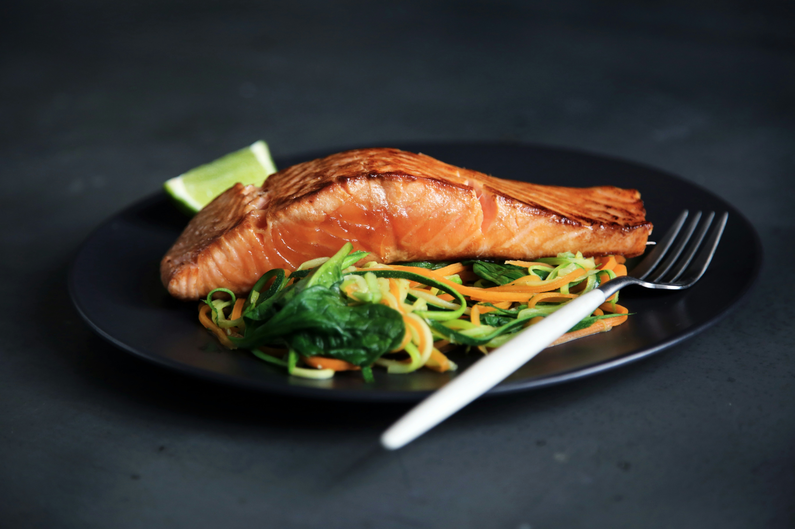

Home
Grilled Salmon

Description
Grilled salmon features tender, flaky fillets with a smoky char and crisp edges. Seasoned simply with herbs, lemon, and olive oil, it offers rich flavor and a moist, buttery texture perfect for a healthy meal.
Ingredients
- 1 ½ pounds salmon fillets
- lemon pepper to taste
- garlic powder to taste
- salt to taste
- ⅓ cup soy sauce
- ⅓ cup brown sugar
- ⅓ cup water
- ¼ cup vegetable oil
Steps
- Gather all ingredients.
- Season salmon fillets with lemon pepper, garlic powder, and salt.
- Stir soy sauce, brown sugar, water, and vegetable oil together in a small bowl until sugar is dissolved. Place fish in a large resealable plastic bag; add soy sauce mixture, seal, and turn to coat. Refrigerate for at least 2 hours.
- Preheat an outdoor grill for medium heat and lightly oil the grate.
- Place salmon on the preheated grill, and discard marinade. Cook salmon until fish flakes easily with a fork, about 6 to 8 minutes per side.
- Serve and enjoy!